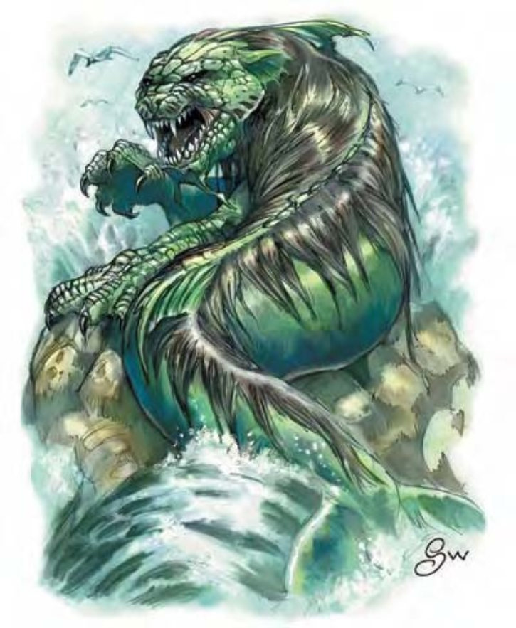

这种生物像海豚或小鲸鱼，但具有狮子的头与前掌。银色鬃毛由头顶延伸至尾尖。
海猫是可怕的水生掠食者。
海猫栖息在浅水海岸，在海中洞穴或沉船中筑巢。他们捕食鱼类、水生哺乳类、海鸟与任何可抓到的其他生物。
海猫具有强烈的领域观念，会攻击任何进入其地盘的生物，无论大小。他们主要的敌人与竞争者是鲨鱼，一旦遇上，他们会放下手中的事展开攻击。有时会暂时组成兽群以对付特别危险或难攻不下的入侵者。兽群结构与狮子类似。
一般的海猫约10英尺长，重约800磅。
| 资料栏位 | 海猫 (Sea Cat) 大型魔法兽 |
| 生命骰 | 6d10+18 (51HP) |
| 先攻 | +1 |
| 速度 | 10英尺 (2格)、游泳40英尺 |
| 防御等级 | 18 (-1体型、+1敏捷、+8天生)、接触10、措手不及17 |
| 基本攻击/擒抱 | +6 / +14 |
| 攻击 | 爪抓+9近战 (1d6+4) |
| 全力攻击 | 2爪抓+9近战 (1d6+4) 及 啮咬+4近战 (1d8+2) |
| 占据/触及 | 10英尺 / 5英尺 |
| 特殊攻击 | 撕扯2d6+6 |
| 特殊能力 | 黑暗视觉60英尺、屏息、昏暗视觉、灵敏嗅觉 |
| 豁免 | 强韧+8、反射+6、意志+5 |
| 属性 | 力量19、敏捷12、体质17、智力2、感知13、魅力10 |
| 技能 | 聆听+8、侦察+7、游泳+12 |
| 专长 | 警觉、坚韧、钢铁意志 |
| 环境 | 温带水域 |
| 组织 | 单独、成双或兽群 (5-12) |
| 宝藏 | 无 |
| 阵营 | 总是绝对中立 |
| 进化 | 7-9HD (大型)；10-18HD (超大型) |
| 等级修正值 | ― |
海猫会攻击眼前的任何生物，无论是为了捕食还是守卫领土。他们会同时用上爪子和利齿抓住并撕裂猎物。即使遇上体型大上好几倍的对手，他们也毫不畏惧，奋战至死方休。海猫会成双成群地合作进击，慢慢削弱对手直至死亡。
屏息 (特异)：海猫可以屏住呼吸不会溺水，持续时间等于体质值×6轮。
撕扯 (特异)：如果海猫的2次爪抓都命中同一个对手，就可抓住并撕裂对方身体，自动额外造成2d6+6点伤害。
技能：海猫在进行任何特殊动作或闪身避祸时，“游泳”检定具有+8种族加值。即使分心或受困，他们在进行“游泳”检定时都可以随时取10。若以直线前进，则可在游泳时进行奔跑动作。